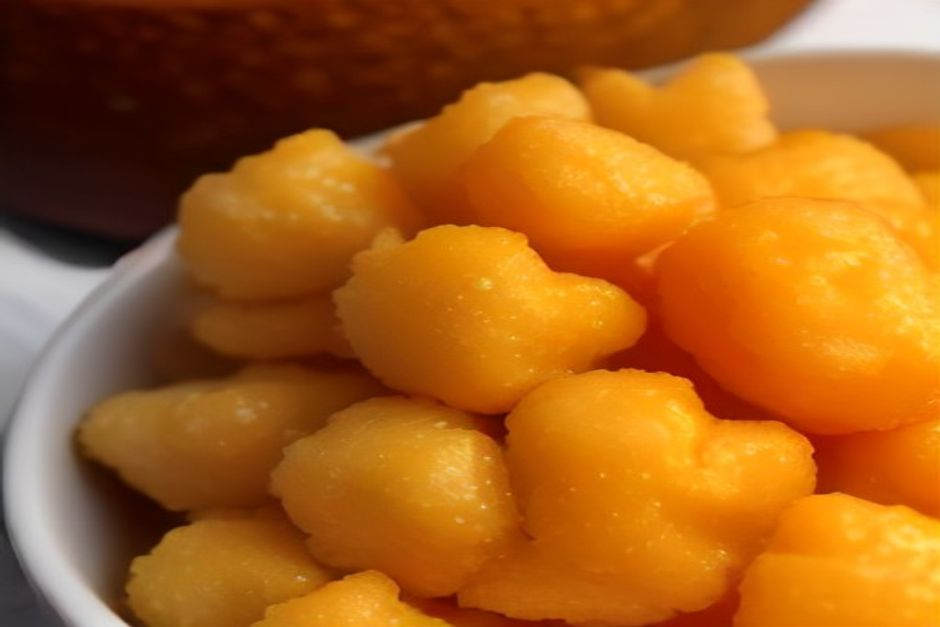
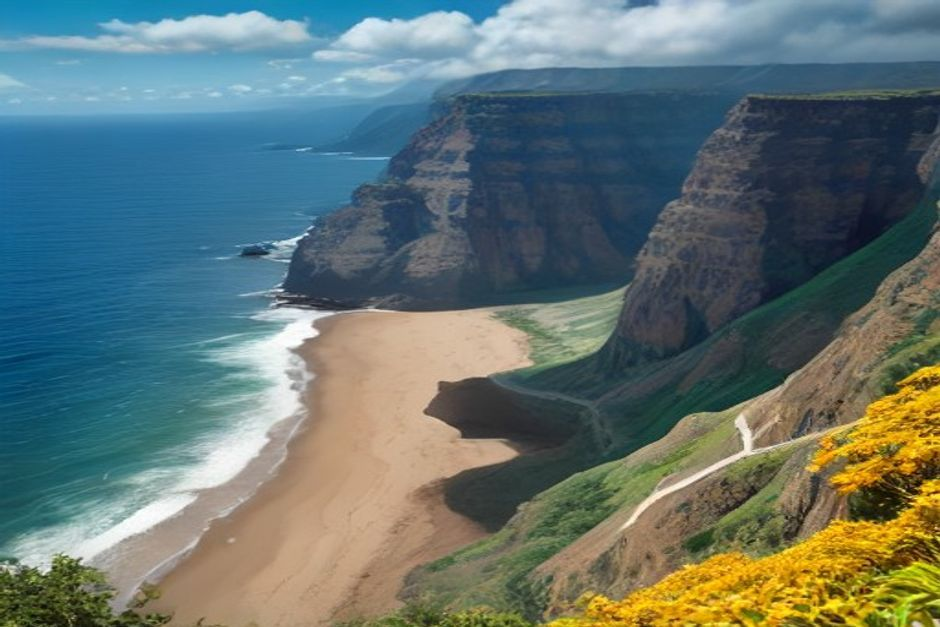

Si ha visto «milho frito» en una carta de Madeira y no sabe qué es, la respuesta corta es esta: dados de maíz frito, crujientes por fuera y tiernos por dentro, cocinados antes con ajo y col. No se pide como plato: llega a la mesa junto a la espetada, casi siempre sin que usted lo pida. Aquí le explicamos qué es exactamente el milho frito, a qué sabe, de dónde viene y dónde merece la pena probarlo.
Qué es el milho frito (o «millo frito», como lo buscan muchos)
Milho significa maíz en portugués, y frito no necesita traducción. A muchos lectores españoles la palabra les resulta familiar: en Canarias y en Galicia al maíz se le llama millo, así que no es raro que busquen «millo frito» o «milo frito». Es el mismo plato. Se pronuncia más o menos «mí-llu frí-tu», porque la «lh» portuguesa suena como nuestra «ll».
En el plato verá cubos pequeños y dorados. Por dentro son densos y suaves; por fuera tienen una costra frita que cruje al morder. No es una tapa ni un entrante: es una guarnición, igual que en España lo serían unas patatas o un buen pan, y en Madeira casi nunca aparece sola. Su sitio está al lado de la carne a la brasa.

A qué sabe: la comparación que le servirá
La referencia más cercana es la polenta italiana, y la comparación sirve hasta cierto punto. Las dos parten de harina de maíz cocida que se deja enfriar hasta que cuaja y se puede cortar. A partir de ahí, se separan:
- Es más denso. El milho frito tiene más cuerpo que la polenta habitual.
- Lleva ajo y couve. La couve es la col portuguesa de hoja suelta, la misma familia que la berza. Le da un fondo salado y un punto ligeramente amargo que la polenta sola no tiene.
- Siempre va frito en dados. La polenta suele hacerse a la plancha o en sartén en lonchas; el milho frito se corta en cubos pequeños y se fríe en abundante aceite. Más superficie, más corteza crujiente en cada bocado.
Si tuviera que describirlo a alguien en España, diríamos que está a medio camino entre una polenta frita y un buñuelo salado, con la textura de una buena croqueta: fuera cruje, dentro es blando.
Cómo se hace el milho frito
No hace falta saber cocinarlo para disfrutarlo, pero entender el proceso explica por qué sabe como sabe:
- Se cuece harina de maíz blanco a fuego lento con agua, manteca de cerdo o mantequilla, ajo machacado y couve picada.
- Se remueve hasta que la masa espesa y queda como una polenta muy firme. En este punto, todavía sin freír, se llama milho cozido, es decir, maíz cocido.
- Se deja enfriar y reposar un par de horas, hasta que cuaja.
- Se corta en dados y se fríe en aceite caliente hasta que cada pieza tiene su costra dorada.
El reposo es la clave: sin él, la masa no aguanta la fritura y no sale esa corteza que lo hace tan adictivo.
Milho frito y espetada: por qué siempre van juntos
La espetada es el plato de carne más conocido de Madeira: trozos de ternera sazonados con ajo y laurel, ensartados en una brocheta y asados a la brasa, tradicionalmente sobre leña de laurel. En casi toda la isla, su acompañamiento natural es el milho frito.
La razón es práctica. En la mesa, los dados de maíz empapan los jugos de ajo y vino que suelta la carne, que es justo lo que en España haría el pan. La diferencia es que aquí, además, crujen. Por eso en muchos restaurantes ni siquiera figura como guarnición aparte: espetada y milho frito se sirven como un conjunto.
De dónde viene: unas gachas del día anterior
El maíz llegó a Madeira con los colonos portugueses en el siglo XV y se dio bien en las terrazas empinadas de la isla. Pronto se convirtió en un alimento básico de las casas del campo, junto a la patata y el pan.
El milho frito no salió de un recetario, sino del aprovechamiento. Las gachas de maíz que sobraban se quedaban frías y duras de un día para otro. En vez de recalentarlas blandas, se cortaban y se freían. El resultado gustó tanto que acabó siendo un plato por derecho propio. Es la misma lógica que tantas recetas de nuestras abuelas: no tirar nada y que, encima, salga rico.

Dónde comer milho frito en Madeira
La buena noticia es que no tendrá que buscarlo mucho. Casi cualquier restaurante tradicional que sirva espetada le pondrá milho frito al lado. Si lo que quiere es probarlo en su ambiente, hay dos nombres que conviene apuntar:
- Câmara de Lobos. El pueblo pesquero al oeste de Funchal, a la orilla del mar, es uno de los lugares más asociados a la espetada y al milho frito.
- Estreito de Câmara de Lobos. Más arriba, entre viñedos. Aquí son típicas las churrascarias al aire libre, donde la espetada se cuelga de un soporte sobre la mesa y cada uno se va sirviendo de la brocheta.
En Funchal también lo encontrará sin problema en los restaurantes de cocina madeirense. Si quiere organizar el resto del viaje, en nuestro Diario tiene más guías de la isla y en la página de información práctica lo esencial antes de salir al mar.
Cómo pedirlo y qué esperar en la mesa
- No hace falta pedirlo aparte. Si pide espetada, lo normal es que el milho frito llegue con ella. Si no lo ve en la carta, pregunte: es muy probable que lo tengan.
- Cómalo caliente. Recién frito es cuando la corteza está en su mejor momento. Frío pierde buena parte de la gracia.
- Úselo como usaría el pan. Páselo por los jugos de la espetada que quedan en el plato. Para eso está.
- Mejor para compartir. Suele servirse en una fuente o un cuenco al centro, para toda la mesa.
Un buen plan: la costa en barco y luego espetada en Câmara de Lobos
Câmara de Lobos es también la primera parada del Day Trip de Chifbay desde Funchal, así que el plan se arma casi solo: por la mañana, la costa vista desde el agua; después, una comida tardía en tierra con espetada y milho frito.
La salida de día parte a las 10:00 o a las 14:00 desde la Marina do Funchal, pantalán C. Navega por delante de Câmara de Lobos y bajo Cabo Girão, con parada para bañarse y tablas de paddle surf en Fajã dos Padres. Hay dos opciones: 2 h 30 hasta Ribeira Brava por 500 €, o 3 h siguiendo hasta Ponta do Sol por 600 €. El precio es por el barco entero, nunca por persona, y el barco es solo para su grupo, hasta 5 personas, con dos patrones de Madeira. Encontrará todos los detalles en la excursión de día.
Si prefiere comer primero y salir después, la salida al atardecer zarpa 1 h 15 antes de la puesta de sol durante todo el año: 2 h hasta Cabo Girão por 400 €, o 2 h 30 hasta Ribeira Brava por 500 €. No incluye parada para el baño. En cualquiera de las dos hay comida y bebida a bordo, vídeo 360° con Insta360, imágenes de dron si el tiempo lo permite y fotos hechas con una cámara de verdad. Puede cancelar gratis hasta 24 horas antes. Delfines, luz dorada o mar en calma no se pueden prometer: cuando aparecen, son un regalo.
Para comparar con otras opciones de la isla, le puede ayudar nuestra guía de excursiones en barco en Madeira, o ver todas nuestras experiencias.
Nadie viaja a Madeira por el milho frito. Pero quien lo prueba con una espetada recién bajada de la brasa suele pedir otra fuente.
La espetada se lleva la fama y las fotos. El milho frito, mientras tanto, llega sin hacer ruido, cruje, recoge los jugos del plato y acaba siendo lo primero que se termina en la mesa. Si va a Madeira, no se vaya sin probarlo.